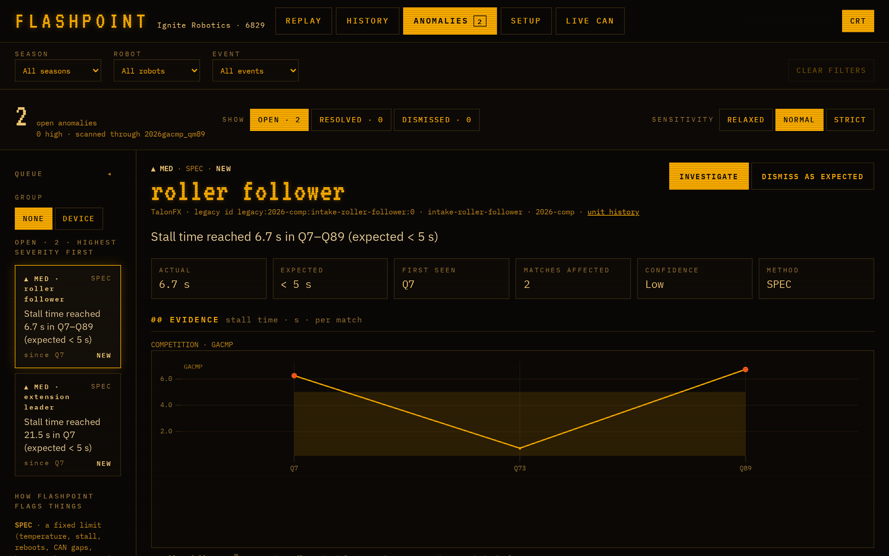

View: Anomalies¶
Status: beta (#77). Detection is tuned on one team's robots (ours), so a finding is a suggestion to check against its evidence, not a verdict. The Anomalies view is the queue of everything detection flagged: each anomaly with its evidence, a severity, likely causes to check, and what the team did about it (triage). It needs flashpoint serve; a static export doesn't have it. Make findings trustworthy says how to get better findings on your robot.

What beta means today¶
Shipped now: the view, its findings, triage, and the why text of each anomaly, which names the battery proxy a brownout was judged on.
Planned under #77, and not in the app yet:
- a BETA tag and a one-line note in the view's header, saying that detection is tuned on one team's robots and that findings are suggestions to check against the evidence, with a link to this page. It will show whatever the counts, including when nothing is flagged;
- brownouts found on the median fallback (no
battery_proxydeclared) capped at MED, with awhythat says the fallback can read wiring drops as brownouts; - CAN-gap floors that scale with a device's frame rate. Until then, a CANivore device at 250 Hz can get DRIFT, STEP or SIBLING findings on isolated CAN gaps or CAN frames missed per minute from normal timing jitter. Check the evidence before acting on one, or raise
floorsin anomaly.toml.
Make findings trustworthy¶
Three things in your configuration make findings more trustworthy:
- Declare a battery proxy slot. Brownouts are judged on the robot file's
battery_proxy: a low-current device on the main power bus, such as the gyro. With none, Flashpoint uses the median supply voltage across devices, which can read wiring drops under load as brownouts. The anomaly's "Why it was flagged" text names the proxy it used, such as "median of 12 devices". - Declare sibling groups. SIBLING compares each motor with the others in its
[[siblings]]group: the four drive motors, or a shooter's two flywheels. With no groups, there are no SIBLING findings, and a motor that drifts along with its neighbours (a shared cause, such as a hot day) isn't told apart from one that leaves them. - Let units build their baseline. DRIFT and STEP judge a unit against its own earlier matches, and need
min_baselineof them first (5 by default, anomaly.toml). Until then the unit is "building baseline". Confidence stays Low until the baseline holds 10 matches. After a deliberate change, such as a new gearbox, dismiss the anomaly and restart the unit's baseline (below), so the old normal doesn't keep flagging the new one.
Layout¶
| Part | What it holds |
|---|---|
| Filter bar | SEASON, ROBOT, EVENT and the UNIT chip (the header and filter bar) |
| Summary band | The open count, SHOW and SENSITIVITY |
| QUEUE rail (left) | GROUP, the queue, and HOW FLASHPOINT FLAGS THINGS |
| Main column | The selected anomaly's detail |
The ◂ button at the top of the rail shrinks it to a strip labelled QUEUE; press the strip to bring it back. Your browser remembers this for Anomalies.
Summary band¶
- The large number is the open anomalies that pass the filters at the chosen sensitivity. It's highlighted when any of them is HIGH. Under it: "n high ·" and "scanned through match key", the latest match detection judged, or "nothing scanned yet".
- SHOW picks the queue: OPEN, RESOLVED or DISMISSED, each with its count, such as OPEN · 3. Open means NEW or INVESTIGATING.
- SENSITIVITY: RELAXED, NORMAL or STRICT (below).
The count on the ANOMALIES tab is different: it is always the open anomalies at normal sensitivity, across the whole lake, whatever the filters.
Methods¶
HOW FLASHPOINT FLAGS THINGS, under the queue, lists the methods:
| Method | Fires when | Settings |
|---|---|---|
| SPEC | A fixed limit (temperature, stall, reboots, CAN gaps, brownouts) was crossed in a match | [spec] |
| STEP | A unit jumped away from its own history and stayed there | [baseline] |
| DRIFT | A unit moved slowly away from its own history | [baseline] |
| SIBLING | A unit left the others that do the same job, in the same matches | [sibling] |
| MODEL | An optional model found an unusual mix of features (off by default) | [model] |
Severity¶
| Method | HIGH, MED, LOW |
|---|---|
| SPEC | The highest level any match of the anomaly reached, from the [spec] limits. A reboot while enabled is HIGH; while disabled, MED |
| STEP, DRIFT, SIBLING | How far outside the baseline, in spreads (z): HIGH at high_z or more, MED at med_z or more, LOW below |
| MODEL | As for STEP, but never above MED |
Sensitivity¶
Sensitivity changes what is shown, never what is computed:
| Setting | Shows |
|---|---|
| RELAXED | MED and HIGH only |
| NORMAL | Every severity (the default) |
| STRICT | Also the anomalies that only the lower [strict] thresholds find (anomaly.toml) |
SPEC anomalies show at every sensitivity, and MODEL anomalies at normal and strict only. Your browser remembers the setting, and Replay's anomaly marks use it too. It's also in the address, so a copied link keeps it.
Queue¶
The heading reads TAB · n · HIGHEST SEVERITY FIRST. Anomalies are sorted by severity, then by their most recent flagged match. HIGH ones are highlighted. Each one shows:
- its severity and subject: the slot's role (or slot id), or "Battery · robot" for a robot's brownouts;
- its method;
- its title, such as "Supply path resistance stepped up from 18 mΩ to 31 mΩ at Q12";
- an EVENT BOUNDARY · GADAL → GACMP badge when a STEP started with the unit's first match at a new event;
- "since match", the match it started in;
- its state: NEW, INVESTIGATING, RESOLVED or DISMISSED, with " · NO LONGER DETECTED" when the latest detection run doesn't produce it any more (below).
Select one to see its detail.
GROUP sets how the queue is laid out. NONE is a plain list. DEVICE groups it by physical unit, named "role · SN serial" (or "legacy id"), with a robot's brownouts under "Battery · robot". Each group shows its count and worst severity, and the groups are ordered the same way as the anomalies. Press a group's heading (▾ or ▸) to fold it. Folding isn't remembered; the grouping is, in the address.
Detail¶
Header¶
- The severity, method and state.
- The subject, then its model, "SN serial" (or "legacy id" or "battery proxy"), slot and robot.
- unit history, which opens History with this unit selected and the closest metric, or open in Replay (battery track) for a brownout.
- The triage buttons (below).
Facts¶
The title, then:
| Fact | What it is |
|---|---|
| ACTUAL | The value: the worst value for SPEC, the median of the flagged matches otherwise |
| EXPECTED | The limit for SPEC (such as "< 65 °C"), the baseline and its spread for STEP and DRIFT, or "within x of group" for SIBLING |
| FIRST SEEN | The match it started in |
| MATCHES AFFECTED | Flagged matches. A run of flagged matches with up to two unflagged ones between them is one anomaly |
| CONFIDENCE | Low, Medium or High. Low when the baseline has fewer than 10 matches or only one match is flagged; High when it has 20 or more and at least 3 matches are flagged |
| METHOD | SPEC, STEP, DRIFT, SIBLING or MODEL |
Badges under the facts:
- ▲ LOW ALIGNMENT IN A FLAGGED MATCH: at least one flagged match's hoot and wpilog clocks couldn't be matched with high confidence. Check it in Replay.
- EVENT BOUNDARY · GADAL → GACMP · STARTED AT THE FIRST MATCH OF THE NEW EVENT: the STEP began when the unit moved to a new event. Check whether the mechanism or its configuration changed between events.
EVIDENCE¶
A chart of the metric over the unit's matches, up to 40, ending at the latest flagged one:
| Mark | Meaning |
|---|---|
| ━ (bright line) | This unit's value per match |
| ┅ (dashed line) | The sibling group's median, for SIBLING |
| ▒ (shaded band) | The expected range |
| ■ (large dot) | A flagged match |
The line above it names the competitions, and a dashed vertical line marks the start of each later one, as in History. Select a point to open that match in Replay, with this slot's tracks (or the battery track for a brownout).
WHY IT WAS FLAGGED and LIKELY CAUSES¶
WHY IT WAS FLAGGED says in a sentence what was compared and how far it moved. LIKELY CAUSES lists the causes to check for this method, metric and subsystem, from the team's catalogue (anomaly-causes.toml). It says "No causes recorded for this pattern yet" when the catalogue has none, or "The cause catalogue has an error:" and the error. Causes are suggestions, not a diagnosis.
SEEN THIS BEFORE, OUTCOME and HISTORY¶
- SEEN THIS BEFORE lists resolved and dismissed anomalies with the same method and metric on this unit or this slot, each with what the team wrote. Otherwise: "No closed anomaly like this on this slot or unit yet."
- OUTCOME, for a resolved or dismissed anomaly, is what the team wrote.
- HISTORY lists every triage change, with its time, the states, "baseline restarted" when it applied, and the outcome.
Triage¶
Triage records what the team did about an anomaly. The buttons depend on its state:
| State | Buttons |
|---|---|
| NEW | INVESTIGATE, DISMISS AS EXPECTED |
| INVESTIGATING | MARK RESOLVED, DISMISS AS EXPECTED |
| RESOLVED | REOPEN |
| DISMISSED | REOPEN |
- INVESTIGATE: someone is looking into it. It saves at once.
- MARK RESOLVED: fixed. Write what was found or fixed in WHAT WAS FOUND OR FIXED.
- DISMISS AS EXPECTED: not a problem. Write why in WHY THIS IS EXPECTED. Tick "Restart this unit's baseline for metric from the onset match (for example after a gearbox change)" so the unit's baseline for this metric starts again from the match the anomaly started in.
- REOPEN: back to NEW.
The text is required, up to 500 characters, and is shown with the anomaly and in SEEN THIS BEFORE. Press SAVE · action to save it or CANCEL to close the form. A refused save shows "Not saved:" and the reason, such as "an outcome is required: say what was found or done".
A baseline restart starts flashpoint detect in the background. Until it has run, the detail says "Baseline restart pending: detection has not run since the restart was recorded. The queue updates when it does."
Triage is saved in the lake, never in the logs. When a later detection run no longer produces a triaged anomaly (its configuration or data changed), it stays in its tab with the title "No longer detected: metric from match" and the note "No longer detected: the latest detection run does not produce this anomaly (its configuration or data changed). Its triage is kept." See Triage an anomaly.
Filters¶
The shared filters apply here on the server. An anomaly passes the season, robot and event filters when at least one of its flagged matches is in them. The unit filter keeps that unit's anomalies, which is how History's anomaly badges open this view.
- When the selected anomaly doesn't pass the filters, it stays open and the queue says "The selected anomaly is hidden by the filters."
- When nothing passes: "Nothing passes these filters.", which value no match in the lake has, and CLEAR FILTERS.
Empty and error states¶
| State | What Anomalies shows |
|---|---|
| Nothing open | "Nothing is flagged at sensitivity sensitivity." (on another tab: "Nothing here.") |
| Units without enough history | "n unit(s) are still building their baseline (5 matches before DRIFT and STEP can judge them)." |
| Detection never ran | "Detection has not run on this lake yet: run flashpoint detect." |
| Nothing selected | "Pick an anomaly from the queue to see the evidence." |
| The server can't answer | Anomalies unavailable and the error |
The baseline note always says 5 matches, even when min_baseline is set to something else.
Shared on the network¶
Triage is the app's one write to the lake, so it only works when serve is bound to this machine (the default). Started with flashpoint serve --host 0.0.0.0, the triage buttons are replaced by "Read-only: triage is only available on the machine running Flashpoint.", for everyone, the laptop included. Everything else works. Sensitivity and grouping are each viewer's own. See flashpoint serve.